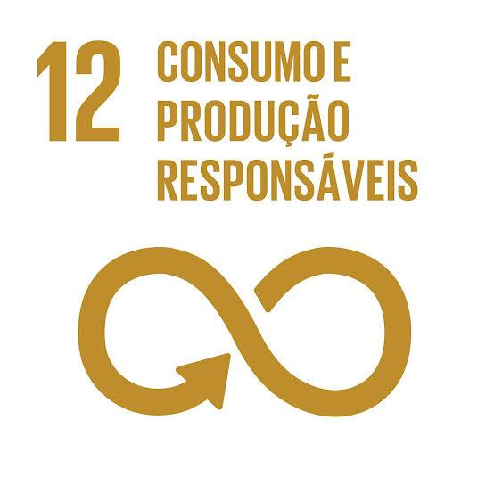

Garantir padrões de consumo e produção sustentáveis.
A ODS 12 (Objetivo de Desenvolvimento Sustentável 12) tem como foco assegurar padrões de produção e consumo sustentáveis. Isso significa repensar a forma como usamos os recursos naturais, produzimos bens, consumimos e gerenciamos resíduos.
Um dos principais é o uso excessivo de recursos naturais, que supera a capacidade do planeta de se regenerar. Além disso, há altos níveis de desperdício, especialmente de alimentos e produtos de uso único. A produção industrial ainda é poluente em muitos setores, gerando resíduos tóxicos e emissões que afetam o meio ambiente.